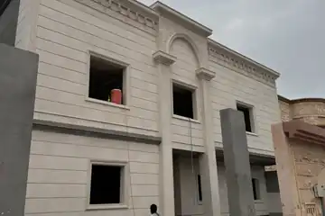

ترميم وتجديد العقار
تحديد الأجزاء المطلوب ترميمها أو استبدالها، وترتيب الأعمال حسب حالة المبنى واستخدامه.
جدّد عقارك بنطاق أعمال واضح: ترميم الفلل والمباني، معالجة التشققات بعد تقييم أسبابها، وتجديد الواجهات والمساحات الداخلية. نبدأ بحالة المبنى والأعمال التي تحتاجها.
ابدأ بالحي ونوع العقار والأعمال المطلوبة؛ أرسل الصور إذا كانت متاحة.

نراجع الأعمال المطلوبة قبل التنفيذ، سواء كان المطلوب تجديد جزء من العقار أو ترميمًا يشمل عدة بنود.
تحديد الأجزاء المطلوب ترميمها أو استبدالها، وترتيب الأعمال حسب حالة المبنى واستخدامه.
فحص الملاحظات الظاهرة وتحديد المعالجة المناسبة؛ الشروخ التي يشتبه في سببها الإنشائي تحتاج تقييمًا مختصًا قبل إصلاحها.
مراجعة حالة اللياسة والدهانات وعناصر الواجهة، وتحديد ما يحتاج معالجة أو إزالة أو تجديدًا.
ربط أعمال الترميم بالتشطيبات والديكور عند الحاجة، مع توضيح البنود المشمولة قبل البدء.
الخدمة للمشاريع السكنية والتجارية في الرياض. تُراجع الحاجة إلى المعاينة ونطاق العمل بناءً على حالة العقار والصور والمعلومات المتاحة.
لا يوجد سعر واحد يناسب كل ترميم. تتغير التكلفة بحسب المساحة وحالة المبنى وبنود الإزالة والمعالجة والخامات والأعمال التي تظهر بعد الفحص.
نراجع الموقع والصور والاحتياج، ثم نحدد الحاجة إلى المعاينة والفحص.
توضيح بنود العمل والخامات والمسؤوليات والمدة بحسب نتائج التقييم.
تنظيم المعالجة والتجديد وتوثيق أي أعمال إضافية قبل اعتمادها.
مراجعة الأعمال المنفذة والملاحظات بحسب النطاق المتفق عليه.
اتصل بشركة تعاود، أو أرسل صور الحالة مع الحي والأعمال المطلوبة.
أدلة عملية تساعدك على فهم النطاق والتكلفة والعقد والجودة قبل طلب عرض التنفيذ.
التشقق أو الرطوبة أو تلف التشطيب قد يكون عرضًا لسبب أعمق؛ لذلك يبدأ القرار الجيد بالتشخيص وحدود التدخل.
التنسيق المبكر يقلل التعارضات ويجعل القرارات وتسلسل التنفيذ أكثر وضوحًا.
التشخيص والأعمال المخفية وتسلسل المعالجة قبل إعادة التشطيب.
تُحدد بحسب المساحة وحالة المبنى والأعمال المطلوبة والخامات والحاجة إلى إزالة أو معالجة. تساعد الصور والمعلومات الأولية على فهم الطلب، ويُحدد نطاق السعر بعد التقييم اللازم.
اتصل على 0551128884 أو أرسل عبر واتساب الحي ونوع العقار وصور الحالة والأعمال المطلوبة. نراجع المعلومات لتحديد الخطوة التالية والحاجة إلى معاينة.
تختلف المدة حسب نطاق المعالجة والتشطيب وحالة العقار وتوفر المواد وإمكانية العمل داخله. تُراجع المدة مع نطاق الأعمال، وأي تغيير يظهر أثناء الفحص أو التنفيذ يُناقش قبل اعتماده.
لأن الشروخ والرطوبة والتلف قد تكون أعراضًا لأسباب مختلفة، والمعاينة تساعد على تحديد مواضع الفحص والقياس ونطاق الفتح التجريبي عند الحاجة.
لا دائمًا؛ يجب تحديد سبب العيب أولًا، مثل مصدر الماء أو حركة العنصر أو تقادم التمديدات، ثم اختيار معالجة متوافقة قبل إعادة التشطيب.
يوضح العرض الافتراضات والبنود القابلة للقياس، وتوثق أي حالة تظهر بعد الفك مع أثرها على الحل والتكلفة والمدة قبل استكمال العمل.
يعتمد ذلك على نوع الضرر ونطاق الإزالة ومخاطر الغبار والخدمات والسلامة؛ وتُحدد خطة عزل المراحل أو الإخلاء الجزئي بعد المعاينة.